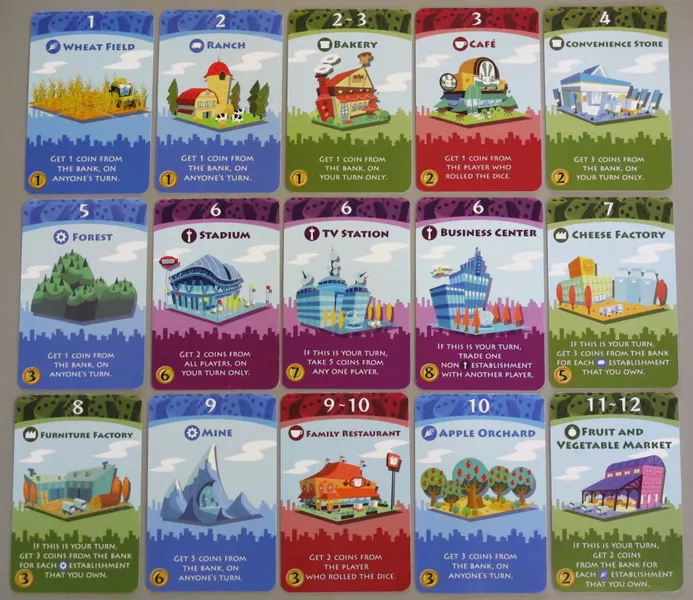

The Mathematics of "Machi Koro"
“Machi Koro” is a strategy (and luck) board game where players try to gain assets and money.
Rules of the game
In each turn; each player tosses a die (or two, if permitted) and gains (or losses) money depending on the outcome of the die and his current assets.
Each player starts with the same set of assets:

The starting hand. Credit: Machi Koro - The Rules and Tactics
The goal of the game is to gain four “special” assets. These are the four lower cards in the above image.
You gain assets by paying with the money you have gained. Each card has a cost written inside a yellow circle on the bottom left of each card.
Each card has a state-and-action pair, the state or condition is depicted by each cards color and number listed on top (somewhat similar to Finite Automaton) and the action is listed on the card - For example; The blue card take action whevenr any player rolls the number listed on the top while the green cards take action only when the player holding them rolls the number listed on top.
For example, whenever any player rolls 1 all the players holding the ‘Wheat Field’ card (the blue card with 1 listed on top) gain a single coin (as the action written on it depicts).
Whenver a player rolls 2 or 3 only she gains a single coin (due to the action written on it).

“Machi Koro” cards. Credit: EndersGame
Some strategies to consider
Single die strategy
You start the game by rolling a single die, thus a reasonable strategy to begin with is to buy as many of the lower cards as possible so to gain from as many veriety. Since each card has the exact probability of $\frac{1}{6}$ this strategy guarentees that on each turn you will gain at least one coin.
An important observation is that there are two different types of expected returns augmented by the cards conditions - one when the player rolls the die and another return when other players roll their die. We would like to maximize both but for the sake of simplicity we will focus, for now, on the return value when it is the players turn to roll the die.
However the cards associated with four, five and six are more expensive, but for now, lets ignore their costs. Indeed, it is a good investment in buying the “Convenience Store” (the green four card) as soon as possible since it is relatively cheap (only costs two coins) but gains the player holding it three coins which increases expected return drastically as it jumps from (We assume here the initial hand of one “Wheat Field” card and one “Bakery” card) -
$$\frac{1 + 1 + 1}{6} = \frac{1}{2}$$
to -
$$\frac{1 + 1 + 3}{6} = \frac{5}{6}$$
What you will find quickly is that the other players will hord the “Bakery” and “Convenience Store” cards quickly in order to quickly gain money and increase their expected return. One needs to quickly buy out the “Convenience Store” cards in order to safeguard against this strategy. Otherwise one will lose quickly.
Two die strategy
Once you have bought enough of the “Convenience Store” and “Bakery” cards it is worth considering buying higher cards such as the “Forest” (the blue-five card) and one of the Purple Six cards (“Stadium”, “TV Station” and “Buisness Center”).These are helpful both for a single die strategy as well as for a two-die strategy.
Once you have safeguard enough against the single die strategy it is worth considering a two-die strategy, however for it to be useful one should first buy at the very least the “Cheese Factory” and/or the “Furniture Factory”. As the probability of rolling these numbers are the heighest (this probability is determined by the dies) -
$$ P[“Rolling\ 6”] = \frac{5}{36} $$
$$ P[“Rolling\ 7”] = \frac{6}{36} = \frac{1}{6} $$
$$ P[“Rolling\ 8”] = \frac{5}{36} $$
Thus, there is a probability of $\frac{1}{2}$ of rolling either of them.
Which means the expected value becomes, assuming a hand which contains all the cards from 1-8 and a “TV Station” for a six card - $$ \frac{0}{36}*1+\frac{1}{36}*2+\frac{2}{36}*1+\frac{3}{36}*3+\frac{4}{36}*1+\frac{5}{36}*5+\frac{6}{36}*3+\frac{5}{36}*3 = \frac{75}{36} $$
Summary
In my view - one first needs to safeguard against the one-die strategy which requires hording of lower and cheap cards like the “Convenience Store” and “Bakery” cards. Otherwise the expected value of the other players jumps quickly.
Than, one needs to decide if they roll a single or two dies, if they would like to roll two dies a good strategy is to invest in one of the six cards and in the “Cheese Factory” and/or the “Furniture Factory” cards to ensure the expected value does not decrease.
Otherwise the expected value is -
$$ \frac{0}{36}*1+\frac{1}{36}*2+\frac{2}{36}*1+\frac{3}{36}*3+\frac{4}{36}*1+\frac{5}{36}*5 = \frac{42}{36} $$
Which is lower (!!) than, the expected return one may recieve by buying two or three of the “Convenience Store” cards -
$$\frac{1 + 1 + 6}{6} = \frac{8}{6}$$